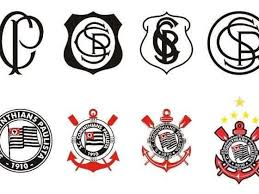

O Sport Club Corinthians Paulista, conhecido popularmente como Corinthians, é um dos clubes de futebol mais populares e vitoriosos do Brasil. Fundado em 1910, o clube tem uma rica história e conquistas notáveis.
A história do Corinthians é marcada por momentos memoráveis, incluindo a conquista de vários títulos nacionais e internacionais. O clube tem uma base de fãs apaixonada conhecida como "Fiel Torcida".
